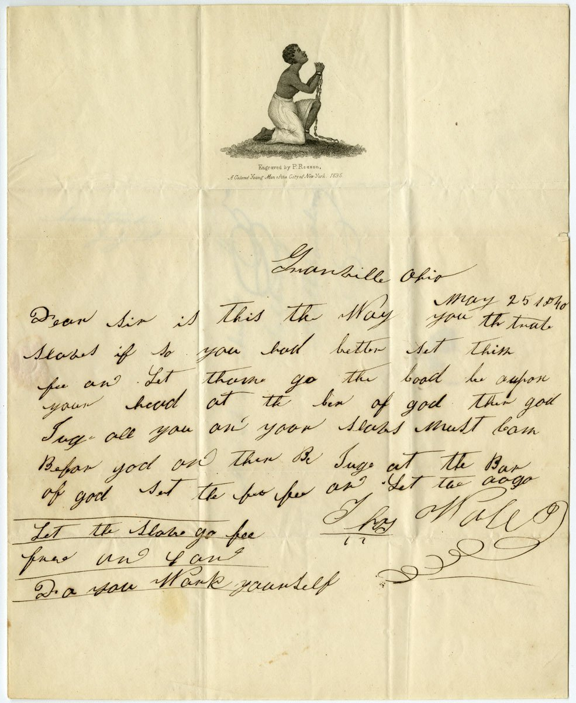
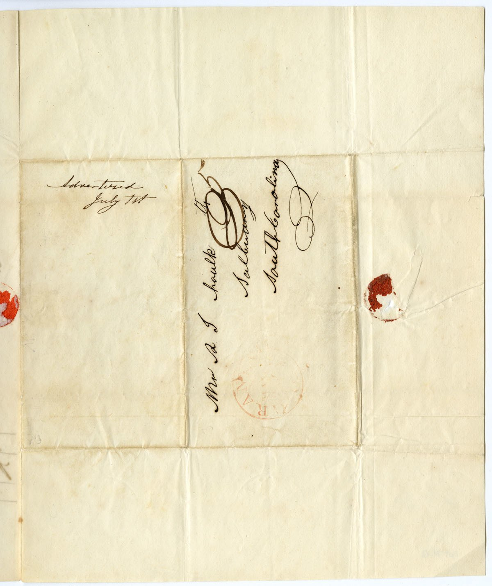

| Field | Detail |
| TOC Fit | Chapter 12 · Essay prompt 12.3 (Who Drove Abolitionism?); Essay prompt 12.4 (Abolition and Women's Rights) |
| Why Here | A Black New York engraver’s version of the kneeling enslaved woman, printed on stationery, was later used by an Ohio man to write directly to a South Carolina slaveholder. Students can read the image as an argument aimed especially at women and the letter as evidence of how ordinary northerners carried antislavery appeals into the mail. |
| Treatment | Public-domain image; printed credit line and manuscript letter transcribed from the repository catalog |
In 1787 British abolitionists adopted the seal of a kneeling, chained African man asking “Am I not a man and a brother?”, and Josiah Wedgwood made it famous on ceramic medallions. In the 1820s British women abolitionists created a female version, “Am I not a woman and a sister?”, which American antislavery societies adopted in the 1830s. Female antislavery societies put it on needlework, gift books, tokens, and stationery, inviting free women to see enslaved women as sisters suffering sexual and family abuse. Patrick Henry Reason (1816–1898), who engraved this version, was a free Black New Yorker trained at the African Free School and apprenticed to an engraver; the sheet proudly identifies him as “a colored young man of the city of New York.” Abolitionists sold such lettersheets so that supporters would spread the image every time they wrote. In 1840 Thomas Wall of Granville, Ohio, a town with an active antislavery society, used this sheet to write to a man in Salisbury, South Carolina, at a time when southern states and postmasters were trying to keep antislavery mail out of the South. Editorial note. The engraver’s credit line and the manuscript letter are reproduced as transcribed in the Library Company’s catalog record, including its bracketed marks for doubtful or illegible words and its “[sic]” notes; the catalog also records an address panel (“Mr. S. T. haulk [sic] Salburry [i.e., Salisbury] South Carolina”) and the note “Advertised July 1st.” Checked against the images: the sheet carries no engraved motto; the title “Am I Not a Woman and Sister” is the Library Company’s descriptive title for the kneeling figure, and the second view shows the address panel and a red postmark. The engraved credit line was confirmed from the image and the letter’s place-and-date line (“Granville Ohio May 25 1840”) added from it; the letter’s phonetic handwriting is otherwise left as the catalog reads it, and the image should be consulted for doubtful words. CAUTION: The image is an argument by its maker and users, not a depiction of a real person; the letter writer’s spelling is his own. |
|
 |
|
 |
|
UNIT 3 · AN EXPANDING NATION | HISTORY B17A | DANIEL GARZA, M.A.
|